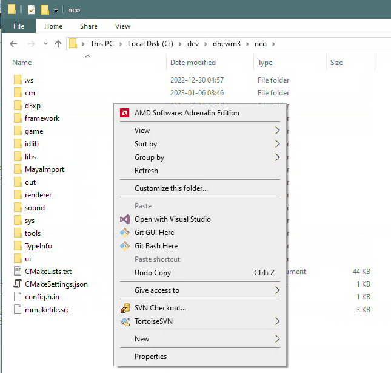
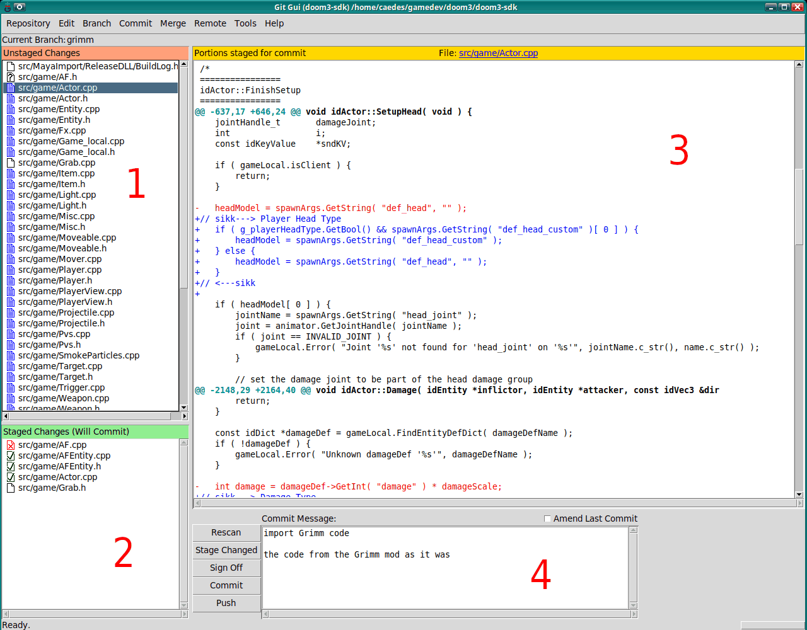
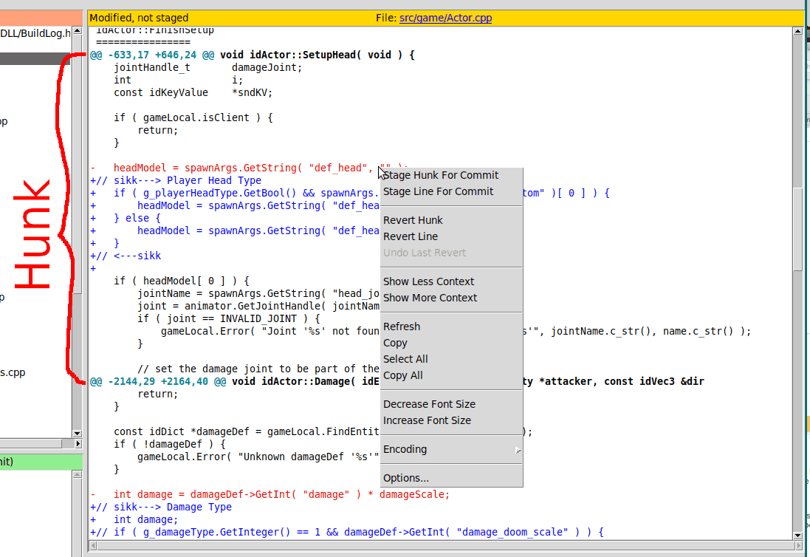
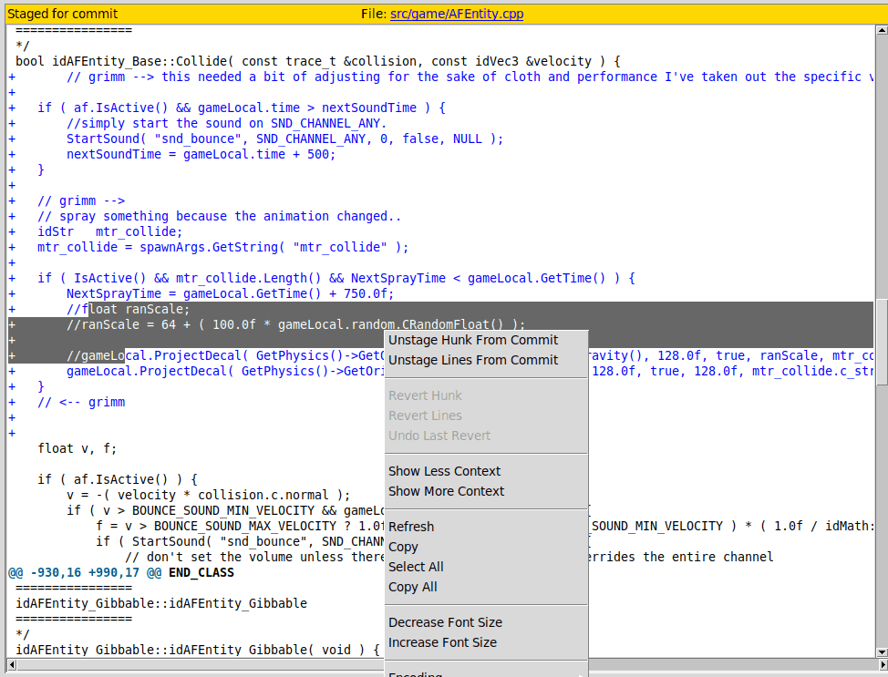
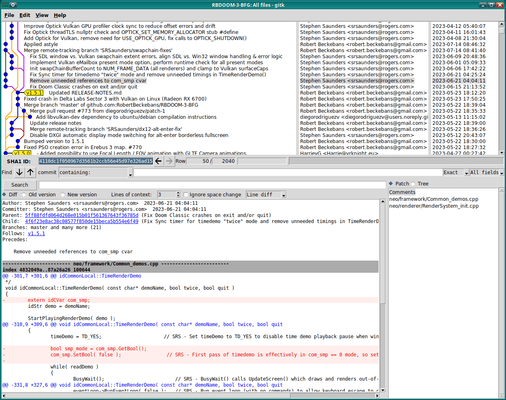

In my experience, git gui is a very useful tool for committing changes to Git.
It makes it very easy to review your own changes before committing them, and only committing the
changes you actually want to commit, instead of all changes in a file.
This helps avoid committing debug prints, temporary hacks used during debugging, TODO comments of things you just implemented and other things that can otherwise easily be committed accidentally.
Of course other similar tools exist, for example Git Cola. I prefer Git Gui because it starts very quickly, is generally fast/responsive and often is already installed. Use whatever you want, but this article is about Git Gui ;)
Installing Git Gui
If you have git installed (if you don’t, this article probably isn’t very relevant for you :-p), chances are good you already have Git Gui.
To check if you have it, open a terminal and enter git gui. If it’s installed, a “Git Gui” window
will open.
On Windows you can usually also open it through the context menu in the explorer,
see below for a screenshot.
If it’s not installed, install it:
On Windows
I have the regular Windows version of git from https://git-scm.com/downloads/win installed, and my Explorer context menu looks like this:

So I can select “Git GUI Here” to open git gui for the project of the current folder.
If you don’t have this, install it. Either from the link above, or from https://gitforwindows.org/ - in the end both lead to the same downloads. The installers for Git for Windows contain Git GUI, though it could be that they only optionally install Git GUI (and the related gitk tool) and that the Shell integration (Explorer Context menu entries for “Git Bash Here” and “Git GUI Here”) is optional as well; in that case make sure all that is enabled in the installer.
If you happen to be using Tortoise Git, it also uses standard Git for Windows under the hood and
according to the documentation
requires you to install it first.
If you use some other GUI-based Git frontend, I don’t know if it requires or comes with Git for Windows,
but it should be possible to use Git for Windows incl. Git Gui and other Git tools in parallel.
In the end they operate on the same local clone of a Git repository..
On Linux and similar operating systems
Your Linux (or BSD or whatever) distribution should come with a package manager that should provide
a git gui package. Install that.
When using debian or one of its derivatives like Ubuntu
or Linux Mint, this can be done with:
$ sudo apt install git-gui
On macOS
If you use homebrew, you can install it with
$ sudo brew install git-gui
Git Gui overview
When opened in a directory that’s part of a checked out Git repository, Git Gui looks kinda like this:

(Note: This and the following screenshots are from Linux, but Git GUI looks and behaves the same. Also note that usually the diff view uses red and green for removed and added lines, I patched mine to use red and blue because I’m red-green colorblind.)
I have added those big red numbers, they’re not actually there.
{kind=link}
1 Unstaged Changes
This is the list of files with Unstaged Changes. Those are changes that have been made but are not part of any commit (not even the one you’re currently creating).
Adding changes to the commit you’re currently working on is called “staging changes”.
- The little blue file icons left of the filenames indicate files that are already known to git
- The white (blank) file icons are for new files that are not yet handled by git at all.
- Little file icons with a question mark indicate files that have been in git (up to the last commit) but are now missing, i.e. have been deleted (I deleted
AF.*for demonstration purposes).
If you click one of those file icons in the Unstaged Changes list, all changes in the file will be staged (or in case of removed files, the fact that it’s removed is staged, or for new files it gets added to git).
You can also select multiple files from the list (as usual, with click+Ctrl or click+Shift) and then click the Commit menu and there Stage To Commit (or press Ctrl-T).
2 Staged Changes
This is the list of files with Staged Changes. Those are changes that will be part of the commit you’re currently creating (unless you unstage them again).
- File icons with a green checkmark indicate files that have changes
- File icons with a red x indicate files that are removed (i.e. you staged a file with a questionmark icon in the Unstaged Changes list - without that the fact that the file is removed would not be committed!)
- A white/blank file icon indicates new files that are being added to git with the currently edited commit
If you click one of the file icons in the Staged Changes list, all changes in the file will be unstaged, which means it will just turn up in the “Unstaged Changes” list again.
Again, you can select multiple files, click the Commit menu and this time Unstage From Commit (or press Ctrl-U) to unstage multiple files at once.
3 Diff View
The diff view shows the changes for the currently selected file.
You can select a file by clicking the filename/path in the Unstaged Changes list or the Staged Changes list.
If you selected a file from the Unstaged Changes list, the diff view shows all unstaged changes in that file, i.e. the changes that exist in your working copy, but haven’t been committed yet. The diff view also allows to stage just parts of the file; more on that below.
If you selected a file from the Staged Changes list, the diff view shows all staged changes in that file, i.e. the changes that will be part of the currently edited commit (unless you unstage them again). Again, the diff view allows unstaging parts of the file, see below.
4 Commit Message
This allows you to write the commit message for the currently edited commit.
You should leave an empty line after the first line.
You should also generally try to avoid lines that are longer than that input field, unless
you can absolutely not avoid it (e.g. because you want to add an URL to the commit message and it’s too long).
When the commit is done, you can click the [Commit] button to the left of that field to create a commit with the message you entered and all changes that are in the Staged Changes list.
- The
[Push]button allows pushing local commits to a git server. - The
[ ] Amend Last Commitcheckbox allows editing the last commit, for example if you have already clicked “Commit” but noticed that you were missing changes or made a typo in the commit message or whatever. If you have already pushed the commit, amending it will lead to conflicts! In feature branches for Pull Requests this is ok, you can just force-push the changes, but don’t do this in the main/master branch or similar branches that other people use! - The
[Rescan]button makes Git GUI check if there have been any changes since Git GUI has been opened, for example because you edited source files in your code editor. - The
[Stage Changed]button stages all Unstaged Changes - usually you should not do this, but instead stage changes using the diff view. Remember that even if you want to stage all the changes of several files (or add several new files), the Unstaged Changes list lets you select multiple files that you can stage withCommitmenu ->Stage To Commit(or by pressing Ctrl-T), which IMHO is a better way to do this with more control. OTOH you can of course still unstage changes to clean up when using this button. - The
[Sign Off]button adds a line to the commit message that’s likeSigned-off-by: Your Name <your@email.example>. It’s mostly relevant for the Linux kernel workflow and similar, not for most projects on Github or similar code forges.
Diff View details
You can right-click in the diff view to get a context menu: 
{kind=link}
This is how you can commit (actually: stage or unstage) just some changes.
Stage Hunk For Commit would stage all changes from the Hunk you right-clicked in.
A “Hunk” is basically a block of changes that are close to each other - after one line that starts with @@ -123,45 ..., to the next similar line (or end of the file if it was the last or only hunk in that file).
Stage Line For Commit would stage just the line the cursor is currently in. So in this example, the removal of the headModel = spawnArgs.GetString( "def_head", "" ); line would be staged, but the added lines below not.
Of course (un)staging just a single line isn’t always that much fun, so Git GUI also allows you to select multiple lines:  (Note that this time I chose a file from the Staged Changes list, so it says Unstage Hunk From Commit. Of course selecting multiple lines works for both staged and unstaged changes.)
{kind=link}
So now you can (un)stage all selected lines at once. Note that only whole lines can be committed, so even though in my screenshot I’ve been a bit sloppy and the first and last line are only selected partially, Unstage Lines from Commit would unstage the full lines.
Conclusion
I hope this helps getting into Git GUI, and that it’s clear now how to commit just relevant changes (scroll through the diff view and stage the hunks you want, or select the lines you want and stage them - or first stage the whole file and then use the diff view from the Staged Changes list to unstage changes you don’t want in this. Both ways are valid and useful, depending on the situation).
By the way, if you’re done committing changes and have Unstaged Changes that you want to get rid of, you can select the file(s) in the Unstaged Changes list, click the Commit menu and select Revert Changes. Afterwards the selected file(s) will be in the state of the latest commit (probably the one you just created) and the other local changes to them are gone.
Another useful tool that actually kinda integrates with Git Gui (and often is installed with it)
is gitk. It allows browsing and searching the commit history

(unlike Git Gui it actually allows configuring the colors used in diffs)
{kind=link}
Bonus: How to make the diff view colorblind friendly
If you’d also like your Git Gui to use red and blue instead of red and green for diffs, you
can patch the git-gui Tcl/Tk script with the following patch (save as git-gui-colorblind.diff):
#!/bin/sh
patch -d /usr/lib/git-core/ < `realpath $0`
exit 0
--- /tmp/git-gui 2022-04-25 03:36:29.164807261 +0200
+++ git-gui 2022-04-25 03:38:22.553314531 +0200
@@ -3588,19 +3588,19 @@
$ui_diff tag conf d_cr -elide true
$ui_diff tag conf d_@ -font font_diffbold
-$ui_diff tag conf d_+ -foreground {#00a000}
+$ui_diff tag conf d_+ -foreground blue
$ui_diff tag conf d_- -foreground red
-$ui_diff tag conf d_++ -foreground {#00a000}
+$ui_diff tag conf d_++ -foreground blue
$ui_diff tag conf d_-- -foreground red
$ui_diff tag conf d_+s \
- -foreground {#00a000} \
+ -foreground blue \
-background {#e2effa}
$ui_diff tag conf d_-s \
-foreground red \
-background {#e2effa}
$ui_diff tag conf d_s+ \
- -foreground {#00a000} \
+ -foreground blue \
-background ivory1
$ui_diff tag conf d_s- \
-foreground red \
Yes, this patch also happens to be a shellscript (patch ignores everything before the first
line that starts with ---) that patches git-gui in the standard (Linux) installation location.
If your git-gui Tcl/Tk script also lies in /usr/lib/git-core/git-gui, you can just run
$ sudo sh ./git-gui-colorblind.diff
to apply it. Otherwise change the path in the script or run patch manually - or just replace all
occurrences of {#00a000} with blue.
It’s handy to have a working script to do this, because every time git/git-gui is updated, you’ll have to apply it again… I hope they eventually add proper settings for the diff colors so they can be configured without patching the script.
On Windows the git-gui script can be found at
C:\Program Files\Git\mingw64\libexec\git-core\git-gui.tcl
(assuming you installed the 64bit version to the standard installation directory).
You’ll need Administrator privileges to modify it.